🍄 Peter McCoy – Fungi in Soil Ecology
Sustainable Design Master Class | Host: Riley Latham
Video: YouTube | ~60 min
Raamat: Radical Mycology (Peter McCoy)
1. Tiitelslaid
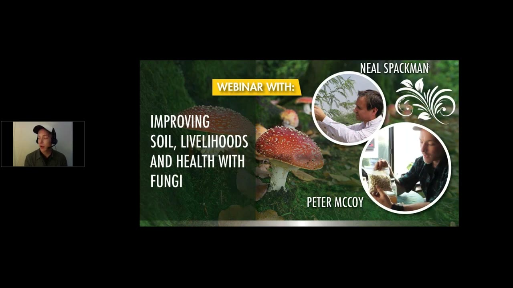
⏱ 00:00 – 03:00
Riley Latham tutvustab veebiseminari ja Peter McCoy'd. Teemaks on seente kasutamine mulla, elatise ja tervise parandamiseks. Neal Spackman liitub hiljem Q&A jaoks.
2. Soil Builders of Old – Samblikud mullaloojatena
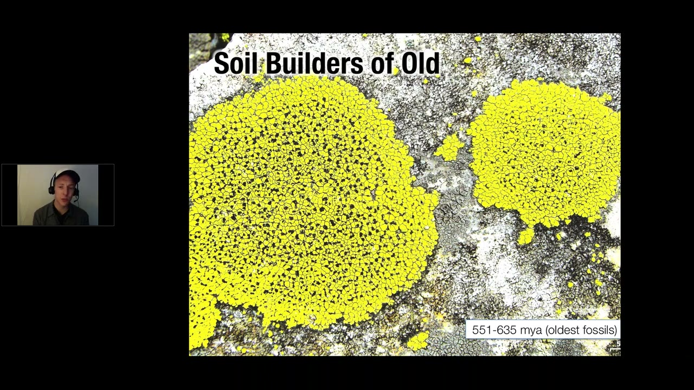
⏱ 05:57 – 07:04
Seened on olnud planeedi mullaloojad algusest peale. Evolutsioonibioloogid väidavad, et esimesed keerulisemad organismid steriilsel kivil olid samblikud (551-635 mya). Samblikud on 95% seenekude — seene komponent vabastab tugevate hapetega kivimist mineraalid. Samblikud lagunedes muutuvad orgaaniliseks aineks — esimesed mullad Maal loodi samblike poolt. Nad võimaldasid taimede juurte arengut.
3. Mycetae: Kingdom Fungi – Seeneriik
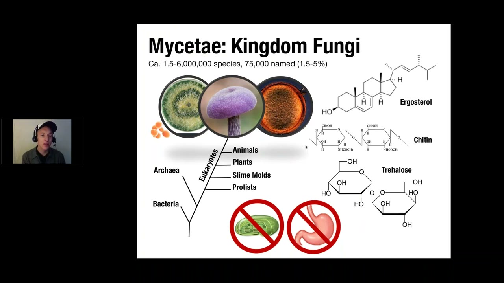
⏱ 07:10 – 10:53
Seeneriik (Mycota) — eukarüootsed organismid. Eristuvad taimedest ja loomadest: rakuseinas ergosterool (mitte kolesterool), kitiinist rakusein (mitte tselluloos), energia salvestatakse trehaloosina. Seedivad väliselt — vabastavad happeid ja ensüüme keskkonda, kohanevad pidevalt. Ca 1,5-6 miljonit liiki, nimetatud ainult ~75 000 (1,5-5%). Kolm põhirühma: Ascomycota (hallitused), Glomeromycota (mullas elavad), Basidiomycota (seened mida tunneme).
4. Mycelium, Mycelium, Mycelium
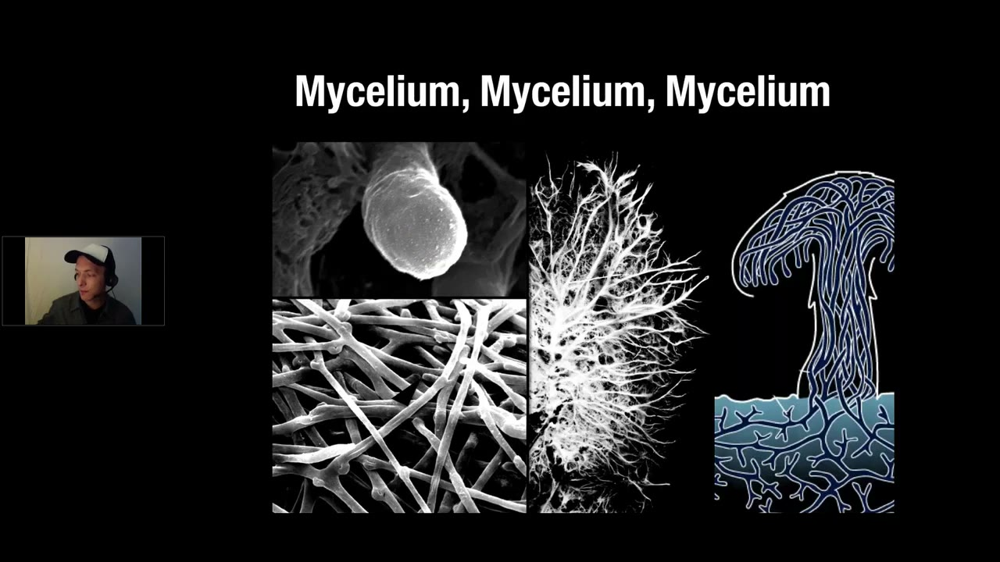
⏱ 11:42 – 12:54
Valdav enamus seeni moodustab koevõrgustikke — mütseeli. See on üherakuliste niitide (hüüfide) võrgustik mis kasvab otsast, pidevalt keskkonnaga suheldes. Otsas vabastatakse seedeensüümid ja happed, neeldakse lagundamise saadused. Enamik seeni ei moodusta viljakehmi — nad elavad mütseeli võrgustikuna mullas ja puidus.
5. Fungi Functioning – Seente levik
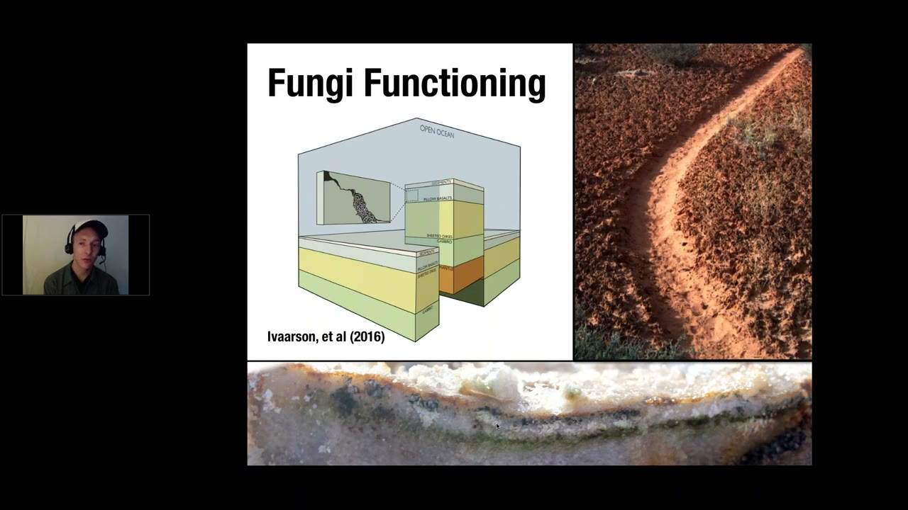
⏱ 12:54 – 16:03
Seened elavad kõigis keskkondades. Merepõhi (maailma suurim elupaik) on tõenäoliselt mütseeli läbistatud — seened lagundavad surnud ookeanielustikku. Kõrbedes moodustavad krüptobiootilised koorikud (seened + samblikud + tsüanobakterid) mikrolohke vee kogumiseks. Antarktikas filtreerib melaniseeritud seenekiht UV-kiirgust taimede jaoks.
6. Mullakihid – Kuidas muld moodustub
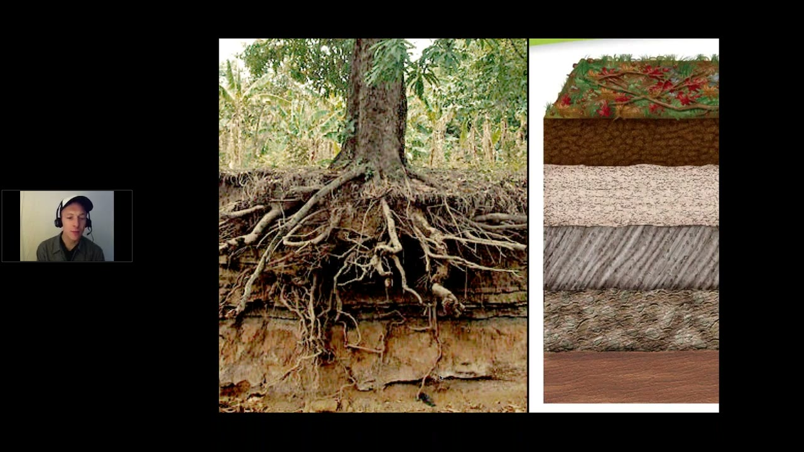
⏱ 16:03 – 17:14
Muld moodustub kahest suunast: alt üles (emakivimi lagunemine mineraalideks) ja ülevalt alla (orgaanilise aine lagunemine). Seened on mõlemas protsessis kesksel kohal — nad vabastavad mineraalid kivist JA lagundavad orgaanilist ainet. Keskel tekib nende kahe segu — erinevad mullatüübid on erinevad proportsioonid.
7. Geomycology & Fungal Biomineralization
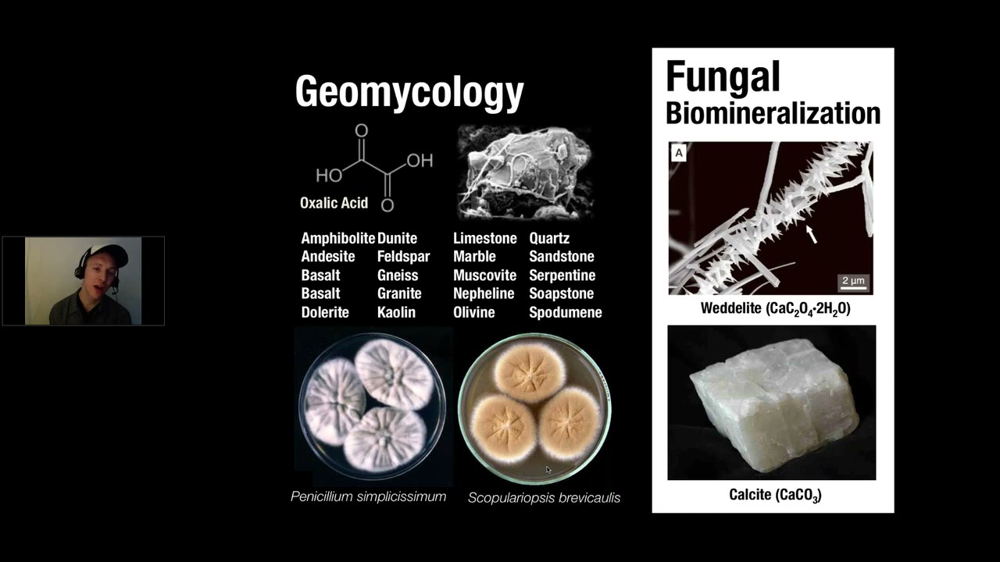
⏱ 17:14 – 20:48
Seened lagundavad kivimeid tugevate hapetega (oksaalhape, õunhape, sidrunhape) — vabastades mineraalid nii endale kui partnertaimedele. Penicillium simplicissimum ja Scopulariopsis brevicaulis vabastavad alumiiniumi savimineraalidest. Samal ajal saavad seened mineraale ka uuesti siduda: biomineralisatsioon loob wedelliiti (CaC₂O₄·2H₂O) ja kaltsiiti (CaCO₃) — suured süsinikusalved mullas. Seente hüüf on kaetud kristallidega!
8. pH skaala – Seente mõju mulla happesusele
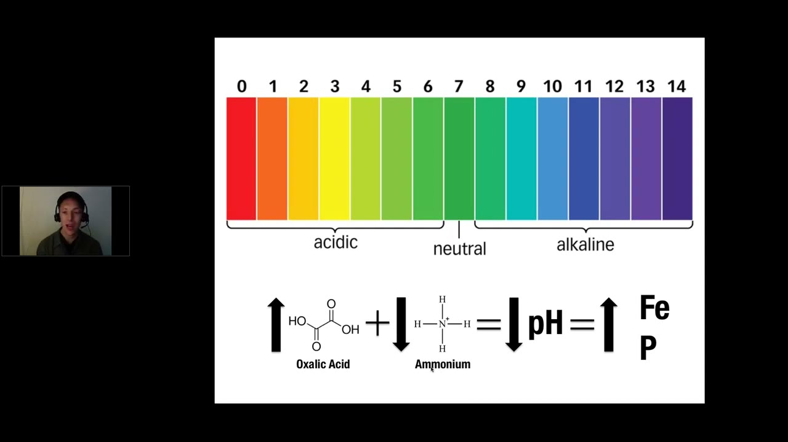
⏱ 20:48 – 21:56
Mullaseened vabastavad oksaalhapet (↑) ja neelavad ammooniumi (↓) — mõlemad langetavad pH-d. Madalama pH juures on raud (Fe) ja fosfor (P) taimedele kättesaadavamad. Seepärast on seenerikkad mullad happelisemad — seened aitavad taimedel toitaineid kätte saada. Seened "skulpteerivad" meie keskkondi, määrates millised taimed ja loomad saavad elada.
9. Saprobes – Lagundajaseened
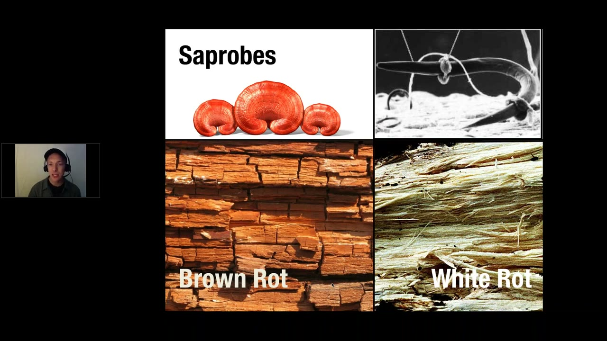
⏱ 21:56 – 24:45
Seened vastutavad 90% lagunemisest planeedil. Pruunmädanik (Brown Rot) lagundab tselluloosi, jättes maha plokja ligniini — "looduse biosüsi" mis hoiab vett ja toitaineid. Valgemädanik (White Rot) — ainult ~2000 seeneliiki suudavad lagundada ligniini (looduse keerulisim ühend). Reishi seen on tüüpiline lagundaja. Mõned seened ründavad isegi nematoode ja putukaid.
10. Trichoderma spp.
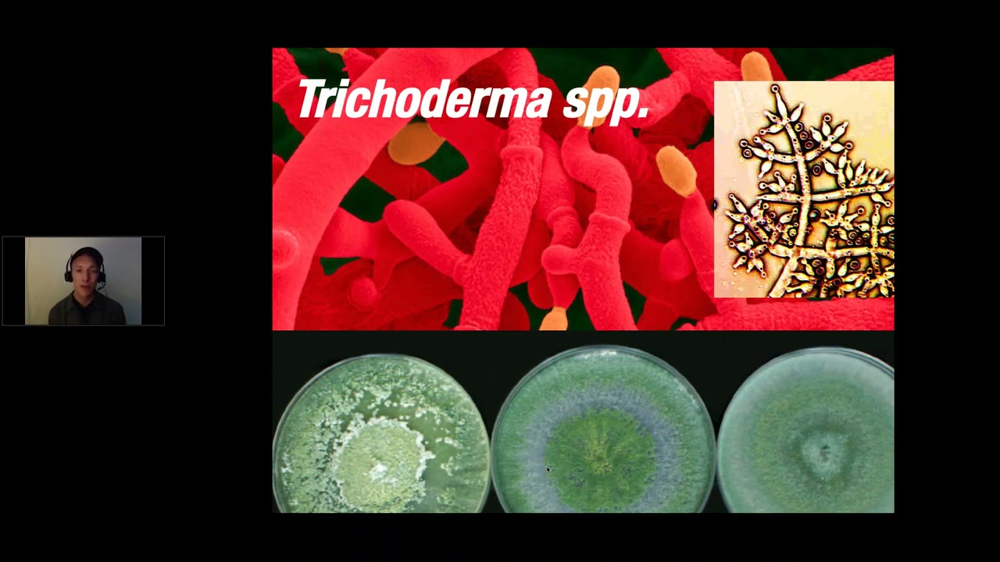
⏱ 24:45 – 25:59
Trichoderma hallitused — suur perekond mida leidub kogu maailmas. Mitu liiki on uuritud nende võime eest kaitsta teiste seenpatogeenide vastu. Lihtne kasvatada ja juuretsooni lisada. Kiirendavad kompostimise lagundamist tänu tugevatele tsellulaasiensüümidele.
11. Mycorrhizal Mutualists – Mükoriisaseened
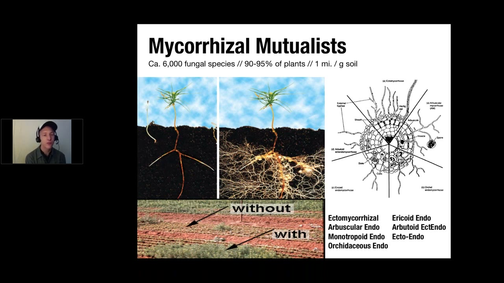
⏱ 25:59 – 29:00
Mükoriisa = seen + juur. ~6000 seeneliiki, 90-95% taimedest moodustavad selle suhte. 1 gramm tervet mulda võib sisaldada 1 miili mütseeli. Sümbiootiliselt kinnituvad juurtele, suurendades pindala 10-1000 korda. Vanim fossiiliga juurte taim (450 mya) omab seda suhet. Tamm, mänd, tsitrus, viinapuu ei elaks looduses ilma mükoriisata. Moodustavad "ühise mütseeli võrgustiku" (CMN) mis ühendab sadu taimi.
12. Mycorrhiza Formation – Mükoriisa moodustumine
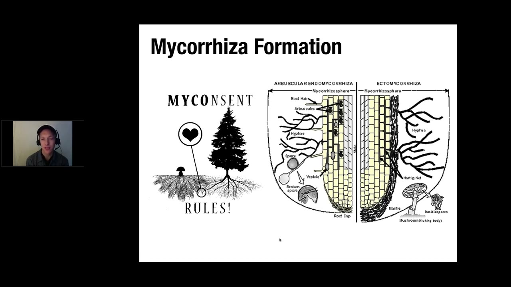
⏱ 29:00 – 31:06
"MYCOnsent RULES!" — mükoriisa moodustub kui taim on toitainete poolest näljas. Üleväetatud taim ei vaja seent. Spoorid peavad juuretsooni sattuma. Ektomükoriisa moodustab paksu kihi (mantli) juureotsa ümber, ei tungi rakkudesse. Endomükoriisa tungib läbi rakuseina (kuid mitte -membraani) ja moodustab arbuskuleid toitainete vahetamiseks.
13. Defense – Kaitsefunktsioonid
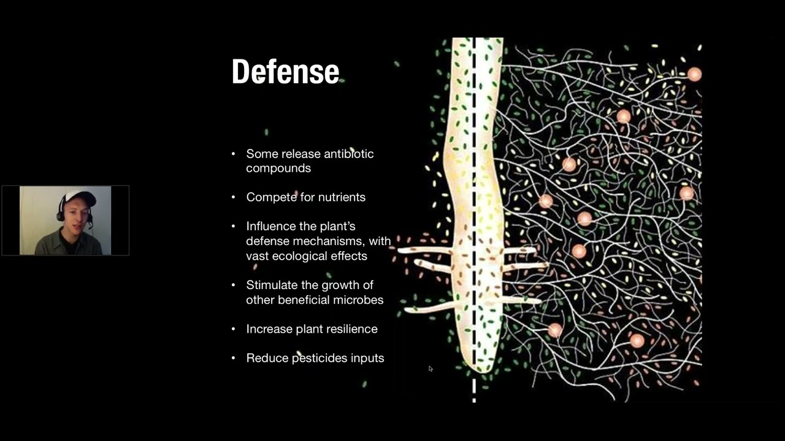
⏱ 31:06 – 32:51
Mükoriisaseened kaitsevad taimi mitmel viisil: vabastavad antibiootilisi ühendeid, konkureerivad toitainete pärast patogeenidega, mõjutavad taime enda kaitsemehhanisme (sh putukavastased signaalid läbi võrgustiku), stimuleerivad kasulikke mikroobe, suurendavad vastupidavust, vähendavad pestitsiidide vajadust.
14. Arbuscular (Endo)Mycorrhizal Fungi – AM seened
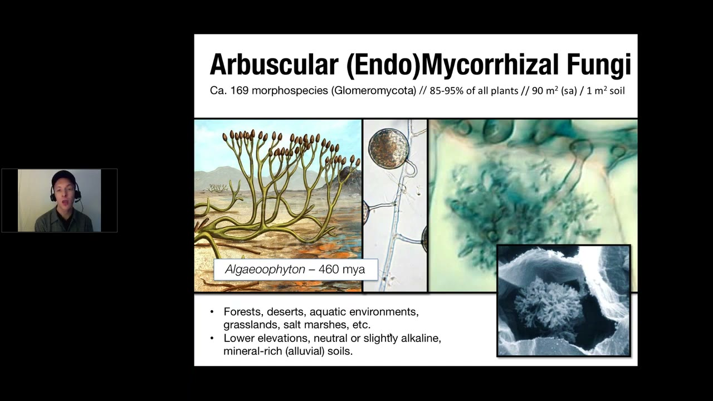
⏱ 32:51 – 35:11
~169 morfoliiki (Glomeromycota). 85-95% kõigist taimedest. 1 m² mullas → 90 m² pindala. Algaeoophyton — 460 mya fossiilist leitud AM seened näevad välja peaaegu identsed tänapäevastega. Suured spoorid sisaldavad tuhandeid geneetiliselt erinevaid tuumasid — suur geneetiline potentsiaal kohanemiseks. Metsades, kõrbetes, veekeskkonnas, rohumaadel, soolasoodesse.
15. Glomalin – Mulla superliim
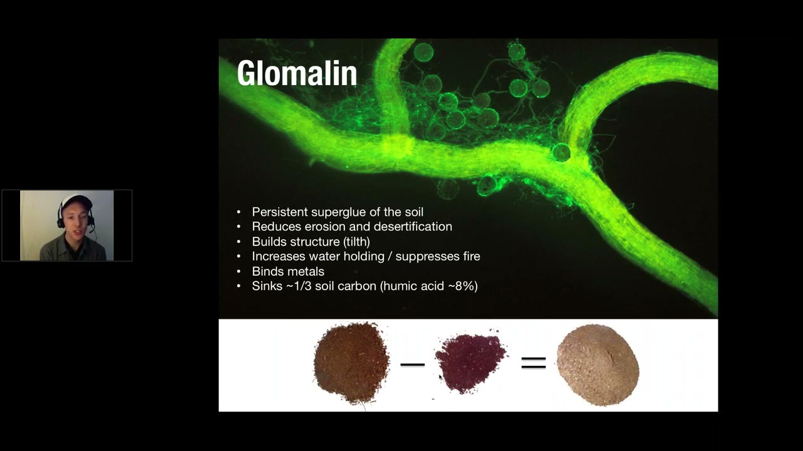
⏱ 36:06 – 37:54
AM seente mütseeli pinnal olev unikaalne kleepuv valk. Püsib mullas kuni 50 aastat (rauasisalduse tõttu). Liimib mullaosaku kokku makroagregaatideks → parem struktuur (tilth), vee- ja õhuläbilaskvus. Vähendab erosiooni ja kõrbestumist, suurendab veemahutavust, pärsib tulekahjusid. Seob metalle. Üks suurimaid süsinikusalvesid mullas (~1/3 mulla süsinikust). Humiinhapped ainult ~8%.
16. AM Cultivation – AM seente kasvatamine
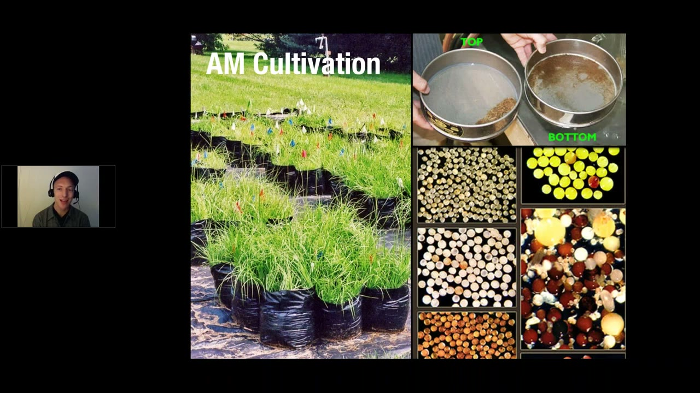
⏱ 37:54 – 39:10
Rodale Instituut töötas 6-7 aastat välja odava protokolli: kasvata kõrrelisi või sibulaid potis, mütseeli ja juured allpool, sügiseks kogu inokulum ja rakenda järgmisel aastal. West Virginia Ülikool uurib spoori eraldamist ja kvantifitseerimist — hea meetrik AM-seente tagasituleku jälgimiseks.
17. Monotropoid & Orchidaceous – Erisuhted
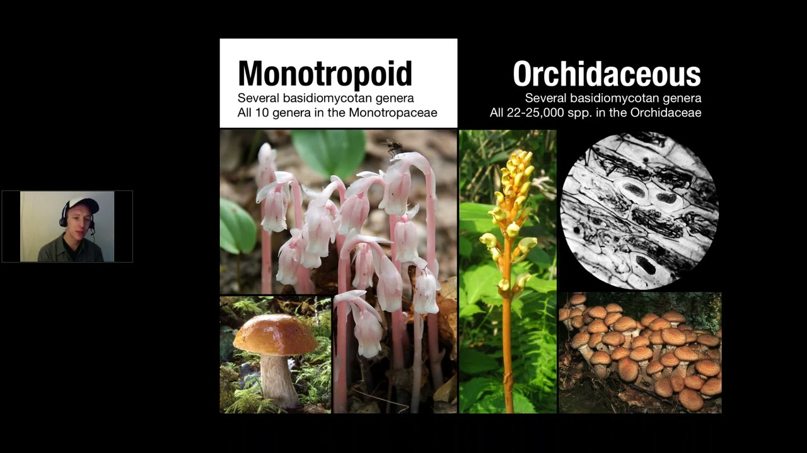
⏱ 40:32 – 42:06
Monotroopsed taimed (ei fotosünteesi) — seen ühendab need puudega ja kanaliseerib toitaineid. Porcini (Boletus) teeb seda! Orhideed — kõik vajavad idanemisel seent, mõnikord kogu elu. Russula liigid ja Armillaria (mesikas) toetavad orhideesid samal ajal kui tapavad mõnda puud.
18. Ectomycorrhizae – Ektomükoriisa
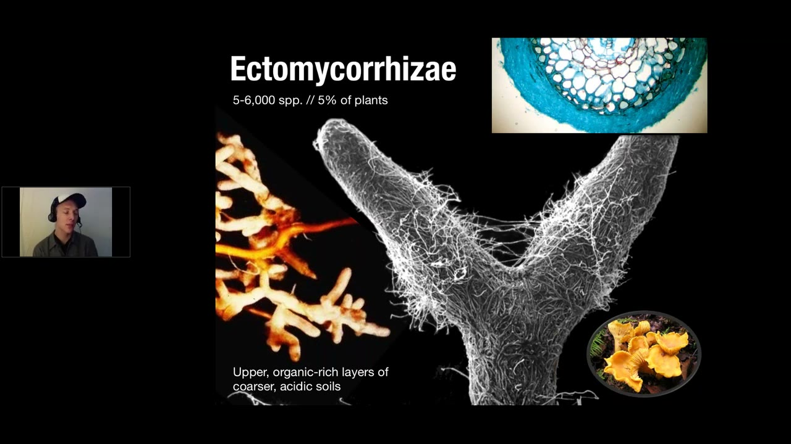
⏱ 42:06 – 43:01
5-6000 liiki, 5% taimedest. Moodustavad paksu mantli juureotste ümber orgaanikarikkas ülemises mullakihis. Happelisel, jämedamal mullal. Kukeseened, puravikud, trühvlid — need on mida soovime kasvatada, aga vähesed liigid on laboritingimustes dialoode saanud.
19. Pisolithus & Laccaria
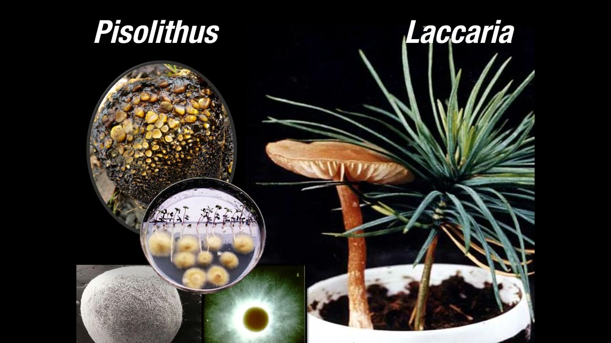
⏱ 43:01 – 44:11
Pisolithus tinctorius — väga kuumakindel (40°C mullad), kasulik puudele kuumades keskkondades. Laccaria — söödav, ravimeid tootev, suudab putukaid süüa ja 25% puu lämmastikust võib tulla putukatest.
20. Desert Truffles – Kõrbetrühvlid
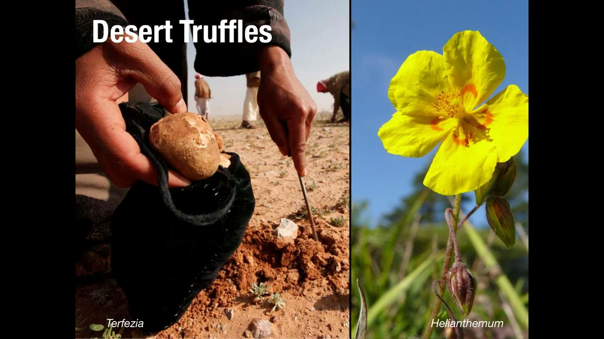
⏱ 44:11 – 45:08
Terfezia trühvlid seotud Helianthemum põõsastega. Valguallikas beduiinidele tuhandeid aastaid. Saab kasvatada — potentsiaal Kalifornias, Ida-Washingtonis.
21. Dark Septate Endophytes (DSEs)
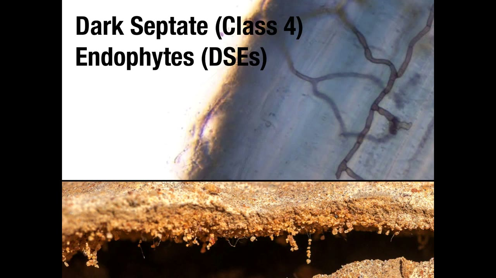
⏱ 45:08 – 46:18
Juurtes elavad endofüüdid — seotud taimedega mis EI moodusta mükoriisa (nt Brassica). Täidavad mükoriisa rolli. Leiduvad krüptobiootilistes koorikutes, aitavad fikseeritud lämmastikku translotseerida (fungal loop hypothesis).
22. Phosphorus & Carbon cycles
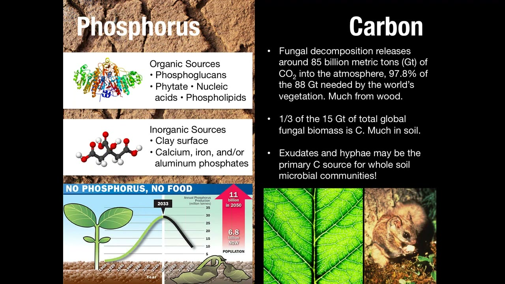
⏱ 47:25 – 48:57
Fosfor: seened lagundavad orgaanilisi allikaid (fosfoglukaanid, fütaat) + vabastavad anorgaanilist P savist ja mineraalidest. "No Phosphorus No Food" — peak phosphorus 2033. Süsinik: seente lagunemine annab 97.8% CO₂-st mida taimed vajavad. 1/3 seente 15 Gt biomassist on süsinik — suurem osa mullas.
23. Nitrogen cycle – Lämmastikuringlus
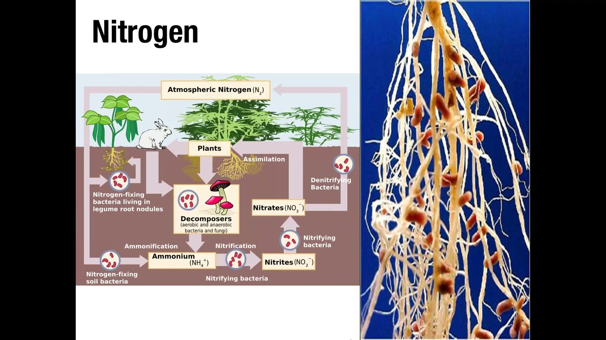
⏱ 48:57 – 51:04
Ektomükoriisaseened otsivad ammooniumi. Laccaria söövad putukaid — 25% puu N-st putukatest. AM seened aitavad Rhizobium-bakteri nodulatsiooni (kolmepoolne sümbioosi): seen annab P, C, Zn → aitab N-fikseerimist. Bakter suurendab seene P-omastamist. Moodustavad koos biofilmi mükorisosfääris.
24. Lichens – Samblikud mullaloojatena
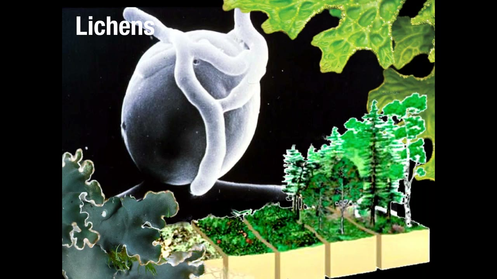
⏱ 51:04 – 52:29
Metsad algavad paljakivilt samblikega. Klimaksmetsas annavad samblikud kuni 50% N-sisendist tsüanobakterite N-fikseerimise kaudu. Kukkudes ja lagunedes vabastavad mineraalid + N mullale.
25. Maddening Metals – Raskemetallid
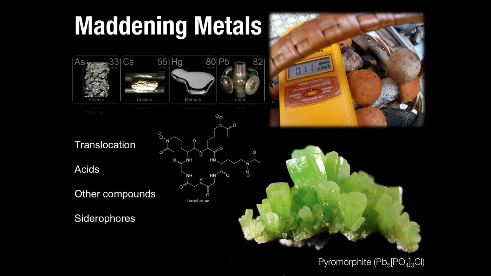
⏱ 52:29 – 54:50
As, Cs, Hg, Pb — seened saavad neid translotseerida, hapetega siduda, siderofooridega komplekseerida. Leccinum seened akumuleerivad Tšernobõli tseesiumi 40 aastat hiljem. Glomaliin seob metalle. Aeglane generatsiooniülene protsess.
26. Aromatics & Plastics – Kemikaalide lagundamine
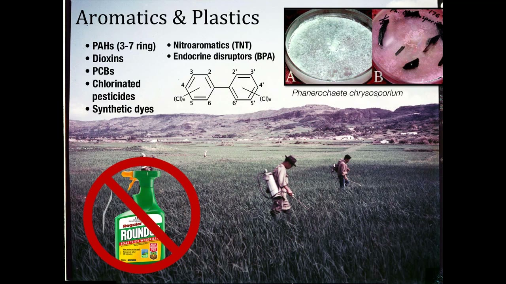
⏱ 54:50 – 56:43
Puidulagundajad lagundavad keerulisi kemikaale: PAH-id, dioksiinid, PCB-d, pestitsiidid, sünteetilised värvid, TNT, BPA. Phanerochaete chrysosporium. Trichoderma lagundab glüfosaati (Roundup), DDT-d. Isegi looduslikust keskkonnast pärit seened lagundavad herbitsiide. Plastikuid matmiskatsetes laguneb alati — eriti seente poolt.
27. Radical Mycology – Raamat
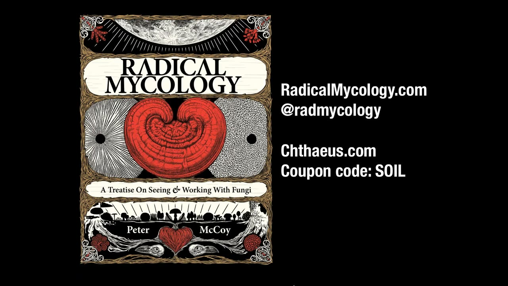
⏱ 58:22 – 59:30
Peter McCoy raamat "Radical Mycology: A Treatise On Seeing & Working With Fungi". RadicalMycology.com, @radmycology. Chthaeus.com, sooduskood: SOIL.